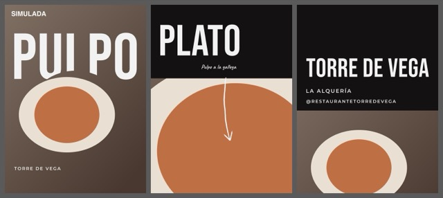
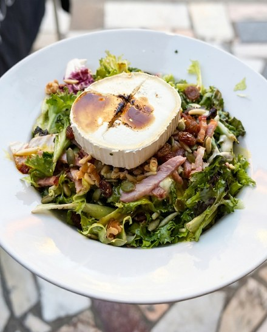

Campaña orgánica del 26 al 30 de noviembre de 2026. Dos posts y un carrusel, en formato 1080 × 1350 px.
Revisión del responsable de contenido
Objetivo. Que Torre de Vega aparezca en el chat donde se decide la próxima comida. Los posts invitan a enviar el plato a una persona concreta. El carrusel recoge preferencias.
Lo que funcionó
El cuchillo en la mano cuenta cómo se sirve el jamón. El entrecot ya cortado hace creíble la broma sobre el último trozo. La misma firma, la paleta del local y un solo gesto por publicación unen las tres piezas.
Qué devolví a edición
El borrador del estudio repetía los nombres completos de los dos entrantes y sus ingredientes en el pie y otra vez en la invitación. Recorté el carrusel de 65 a 24 palabras. Los ingredientes aparecen una vez y el lector puede elegir con una palabra. En los posts sustituí «en la imagen ves» por el gesto del corte y la situación del último trozo.
La maqueta de pulpo repetía el mismo motivo y dedicaba una lámina al rótulo «PLATO». El cierre solo daba el nombre del negocio. Lo sustituí por una elección: ensalada o pulpo. Cada uno ocupa una lámina propia y la pregunta se resuelve al deslizar.
En la primera composición, la firma era pequeña y el recorte horizontal del pulpo ocultaba su presentación. Amplié la letra y puse el texto a la izquierda de la foto vertical. En la ensalada, una prueba generada acercó el producto, pero cambió detalles del queso y recortó el borde. Elegí un encuadre más cercano sobre el original del local.
Ver pruebas descartadas

Maqueta del taller en modo simulado.
Candidata de pago. Solo para revisión.Presupuesto
Máximo autorizado: 4 €. Imagen de prueba: 0.138806 USD. Texto: 0.172153 USD estimados a partir de 6 llamadas registradas a Hydrogen, incluido el razonamiento. Total estimado: 0.3110 USD, aproximadamente 0.28 € al cambio de referencia del 24 de noviembre (1 € = 1,0963 USD). El coste definitivo en euros depende de la facturación. Diario Oficial de la UE.
Seguimiento
Estado de estas maquetas: archivadas para revisión. Siete días después de cada post, anotar los envíos y el alcance. Para el carrusel, contar por separado las cuentas que eligen ensalada, pulpo o ambos. Una cuenta cuenta una vez; una reacción sin elección queda fuera. Si hay alcance disponible, usar envíos por cada 1.000 cuentas alcanzadas para orientar la siguiente prueba. Con dos posts solo tendremos una señal inicial.